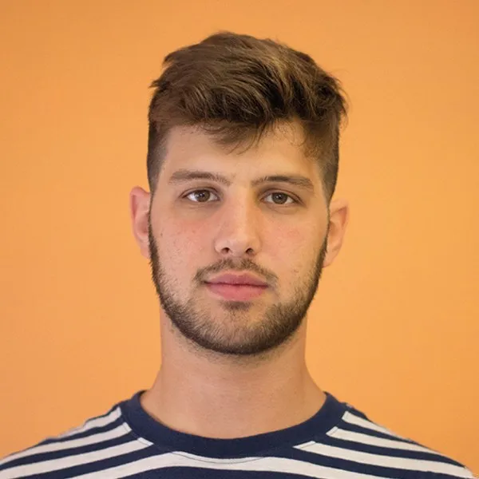
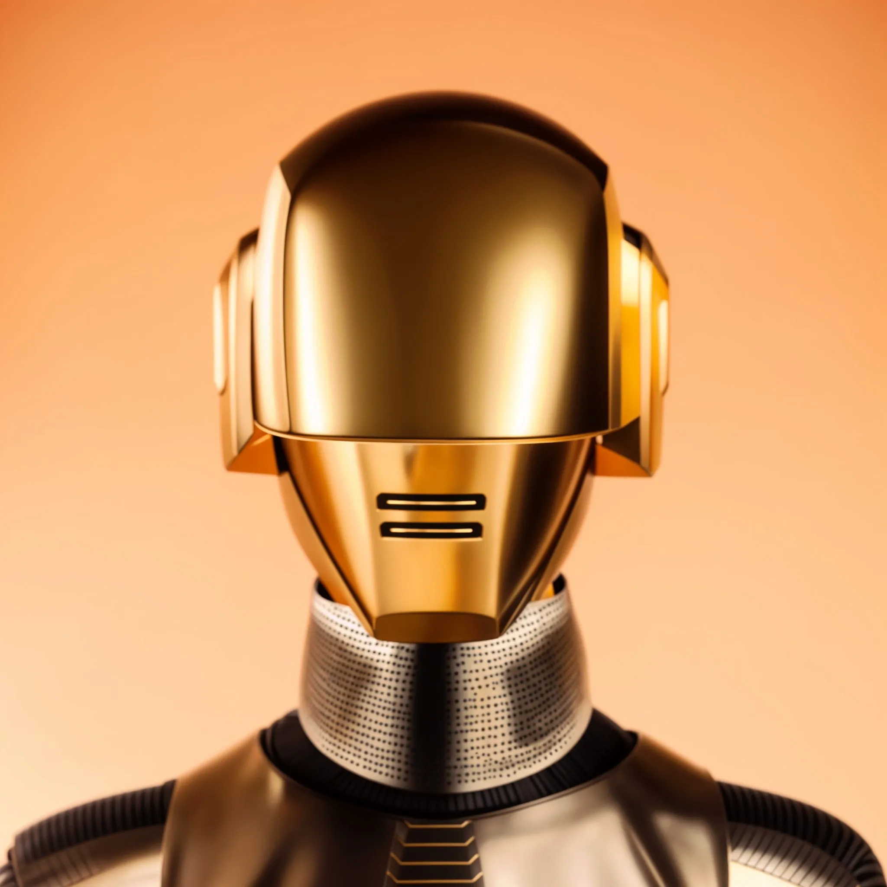
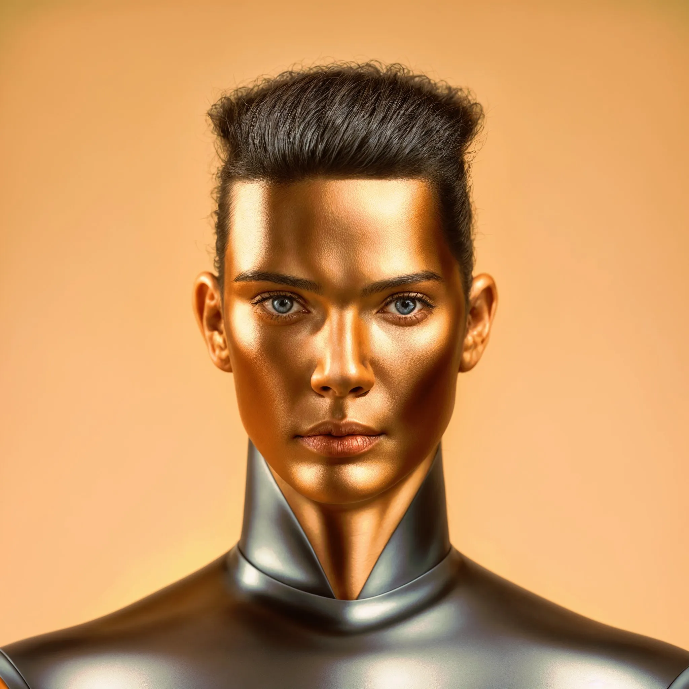
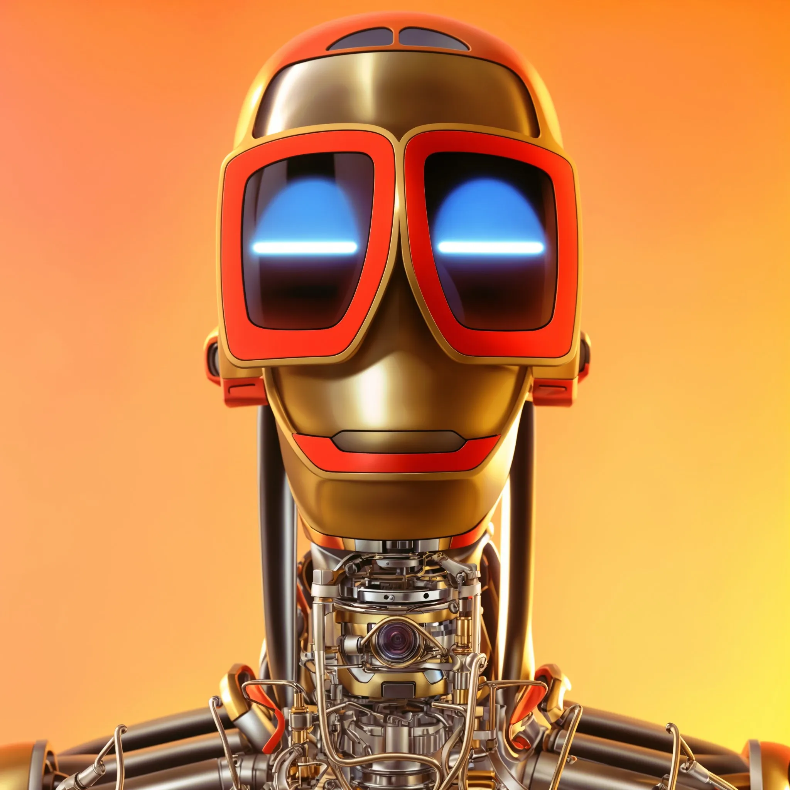
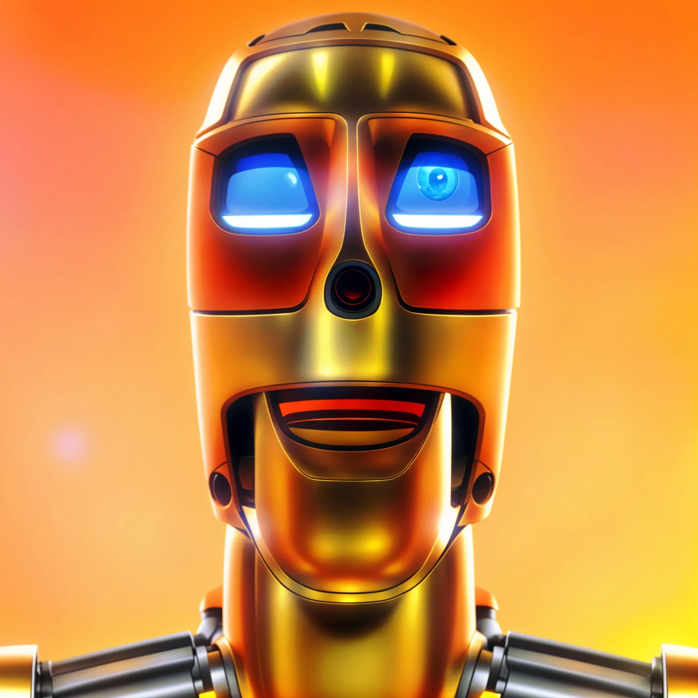
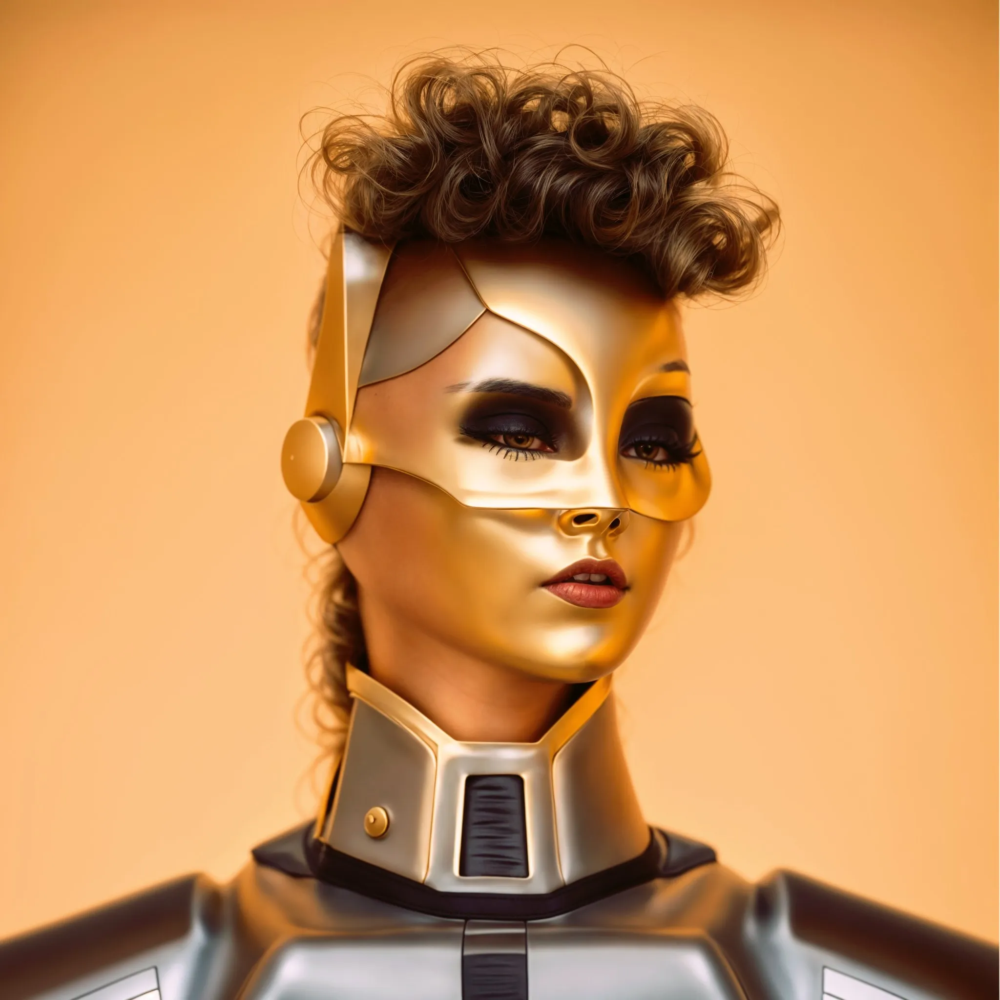

00:00:05:00Arte · Imagen con IA
Alter Ego
Una serie de alter egos del autor, generados con Stable Diffusion imagen a imagen.
- Categoría
- Imagen con IA
- Año
- 2023
- Herramientas
- Stable Diffusion

Alter Ego explora las posibilidades de la generación de imagen a imagen con Stable Diffusion. A partir del modelo, el proyecto genera una serie de alter egos del autor, cada uno único y representativo de un aspecto distinto de sí mismo.
El proyecto empieza reuniendo un conjunto amplio de imágenes personales para generar los alter egos. Las imágenes entran al modelo, que las analiza e interpreta para crear otras nuevas que reflejan distintos aspectos de la personalidad, los intereses y las experiencias del autor. Para cada imagen de entrada el modelo crea una única, captando su esencia y transformándola en una representación nueva, con estilos y temas visuales distintos: una serie de personajes alter ego.
Uno de los aspectos más interesantes es la relación entre lo que el autor tenía en mente al elegir las imágenes y lo que finalmente generó el modelo. Al poner unas y otras lado a lado, el proyecto busca entender mejor cómo la IA interpreta y transforma la información visual, y qué pueden decirnos esas transformaciones sobre uno mismo.









Siguiente en Arte3D / Colección NFT
Analog meets pixels →